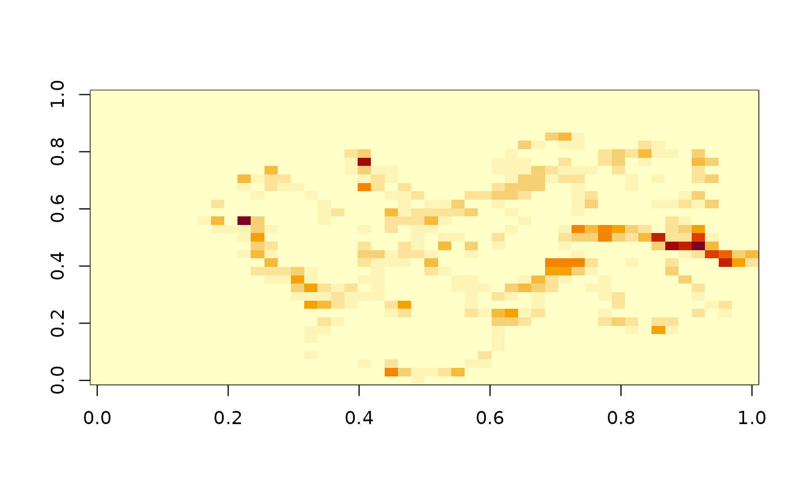

track_cells() overlays the segments of a track model on a regular
grid. It returns one row per piece of a segment inside one cell, with
the segment parameters where the piece starts and ends (p0, p1, from
0 at the first fix to 1 at the second) and the time spent in the piece
(dt, seconds), assuming constant speed along the segment. A segment
with no movement puts all its time in the cell of its fix.
track_cells(x, dimension, extent = NULL, ...)
track_time_spent(x, dimension, extent = NULL, ...)a track model, or anything as_track() accepts
grid size c(ncol, nrow), or a 'meshcore' GRID
grid extent c(xmin, xmax, ymin, ymax), the range of the
fixes if NULL
unused
track_cells(): a data frame with .seg, .cell, p0, p1
and dt. track_time_spent(): a data frame with .cell and time
(seconds), one row per cell with time in it.
track_time_spent() sums that time by cell.
The overlay is exact: the pieces come from where each segment crosses
the grid lines, which is arithmetic on the extent and resolution. It
needs planar segments (segment = "planar" in TRACK()); for longitude
and latitude data that means straight lines in degrees, which is what
the 'trip' package has always assumed for time spent.
The grid is given as for track_grid() by dimension (ncol, nrow) and
extent (xmin, xmax, ymin, ymax), or as a 'meshcore' GRID model in
dimension. Cell ids in .cell are 0-based and row-major from the top
left cell (the GDAL and 'meshcore' order), so .cell + 1 is the index
that track_grid() returns. Pieces outside the grid are dropped.
tr <- TRACK(trips0$x, trips0$y, trips0$date, trips0$id, segment = "planar")
tc <- track_cells(tr, c(50, 35))
head(tc)
#> .seg .cell p0 p1 dt
#> 1 0 584 0.0000000 0.16552947 1559.61865
#> 2 0 534 0.1655295 0.80332683 6009.32674
#> 3 0 535 0.8033268 1.00000000 1853.05461
#> 4 1 535 0.0000000 0.93836817 9389.31193
#> 5 1 534 0.9383682 1.00000000 616.68807
#> 6 2 534 0.0000000 0.02080966 82.46867
ts <- track_time_spent(tr, c(50, 35))
v <- numeric(50 * 35)
v[ts$.cell + 1] <- ts$time
m <- matrix(v, 35, 50, byrow = TRUE) ## first row is the top of the grid
image(t(m[nrow(m):1, ]))
